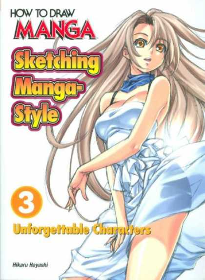
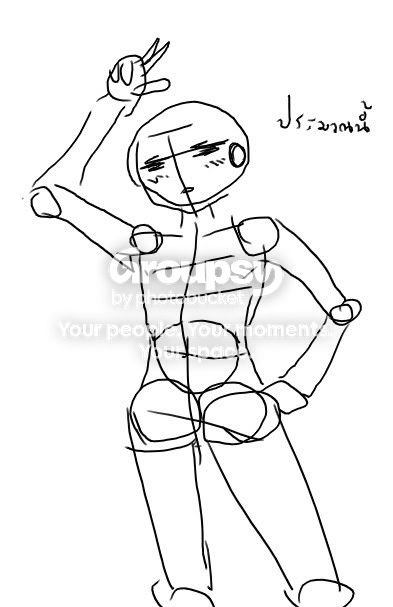

อยากวาดรูปเป็นอะค่ะ!สอนทีนะค่ะ!
สวัสดีค่ะ คือเรามีเรื่องจะขอร้องหน่อยค่ะ เราเป็นคนชอบวาดรูปนะค่ะ เลยอยากวาดรูปสวยๆมั่งอะค่ะ แต่ไม่รู้จะเริ่มตรงไหนอะค่ะ  ช่วยสอนเราด้วยนะค่ะ
ช่วยสอนเราด้วยนะค่ะ
ช่วยสอนเราด้วยนะค่ะ
http://eco.froztic.in.th/archive/ecofanclub/
http://eco.froztic.in.th/archive/ecofanclub/viewtopic.php?f=21&t=68924
ช่วยสอนเราด้วยนะค่ะ
 ช่วงแรกๆแนะนำเริ่มจากการ วาดตามแบบก่อนครับวาดตามเรื่องอะไรก็ได้ที่น้องชอบ
ช่วงแรกๆแนะนำเริ่มจากการ วาดตามแบบก่อนครับวาดตามเรื่องอะไรก็ได้ที่น้องชอบ


 เล่มนี้คุ้มมาก! เทคนิคดีๆเยอะแยะเลย ฉบับแปลไทยมีขายที่ร้านซีเอ็ด ในราคา238บาท (ถ้าจำไม่ผิด)
เล่มนี้คุ้มมาก! เทคนิคดีๆเยอะแยะเลย ฉบับแปลไทยมีขายที่ร้านซีเอ็ด ในราคา238บาท (ถ้าจำไม่ผิด)


 ) ปล.ยังเบี้ยวอยู่เลย
) ปล.ยังเบี้ยวอยู่เลย


แชยอง เขียน:ขอบคุนคะ พอดีไปดูหนังสือไม่มีหนังสือมังก้าเยยคะ
Scythe เขียน:ที่น้องเค้าถามว่าเริมจากตรงไหน ผมว่าน่าจะเป็นเริ่มฝึกวาดจากตรงไหนมากกว่านะครับ
(แต่ถ้าตอบราวๆเรปบนๆล่ะก็ ผมเริ่มจาก"คาง"ครับ ฮา)
ไม่ต้องไปกลัวใครจะมาดูถูกว่า"ไม่เจ๋งจริง"หรือ"ดูแบบนี่หว่า" ถ้าไม่ศึกษาก่อนแล้วจะเป็นได้ยังไง จริงมั้ย
พอเริ่มจับหลักได้ เราก็เริ่มครีเอทเองได้แล้วล่ะ
หรือศึกษาเกี่ยวกับสัดส่วนและเทคนิคการวาด จากหนังสือต่างๆที่มีขายในร้านหนังสือทั่วๆไป เช่น
How to draw manga
อันนี้จะมีหลายเล่มครับ เยอะแยะมาก แต่ถ้าจะให้ผมแนะนำล่ะก็ ต้องเล่มนี้ครับ
ในชุดนี้จะมีสามเล่ม จะซื้อทั้งสามเล่มก็ไม่ว่ากันครับ(แต่ผมซื้อเล่มนี้เล่มเดียว ฮะฮะฮะ)
--------------------------------------------------------------------------
ถ้าเป็นวิธีที่ผมใช้เป็นประจำ
1.เริ่มจากคิดภาพคร่าวๆในหัว ว่าอยากจะวาดอะไร(ซึ่งบางทีก็นานเป็นชม.เลย)
2.ร่างภาพเป็นรูปทรงเรขาคณิตลงในกระดาษด้วยดินสอกดสีฟ้า เช่น หัว/ซี่โครง/ท้อง/สะโพก/ก้น/แขน ขา และเส้นแกนกลาง (อันนี้แปปเดียว ไม่เกิน10นาที)
ตัวอย่าง (ขออภัย วาดด้วยเมาส์หนูไม่เป็น)
3.เริ่มร่างรายละเอียด เช่นกระดูกไหปลาร้า /ตำแหน่งของสะดือ /ใต้รักแร้ ฯลฯ(ถึงเสื้อผ้าบัง ก็ต้องร่างนะ จำเป็นมาก)
อันนี้จะให้จินตนาการเองมันยาก ควรหาแบบประกอบด้วย ว่าตามธรรมชาติแล้วจะเป็นยังไง
และวาดเสื้อผ้าที่จะให้ตัวละครใส่ (หรือจะเปลือย็ไม่ว่ากัน ฮี่ฮี่)
4.ลงเส้นจริงๆที่จะใช้ รวมถึงลบเส้นร่างที่เกินๆมาออกซะ (แต่ถ้าเป็นผมจะมาเน้นเส้นซ้ำอีกครั้ง )
5.ตกแต่งรายละเอียด เก็บเส้นรวมถึงตกแต่งรายละเอียดปลีกย่อย
ตัวอย่างงานที่เสร็จแล้ว ดินสอกดล้วนๆ(ใช้เวลา7ชม.
http://i179.photobucket.com/albums/w309/Scythe_magnus/Alice-gate-800.jpg
ตัวอย่างงานที่เผา.....ใช้เวลา30นาที
http://www.karabako.net/image/karabako.net%20-%205515.jpg
ต่างกันเยอะใช่มะ
เพิ่มเติม เคยเขียนฮาวทูตัดเส้นไว้ในบลอคเอ็กซ์ทีนด้วยเน้อ(นานแล้วล่ะ)
จิ้มลายเซ็นเราไปหาเอาเองละกัน
หมายเหตุ : อะไรต่างๆที่เขียนมา มาจากมุมมองส่วนตัวของผมนะครับ